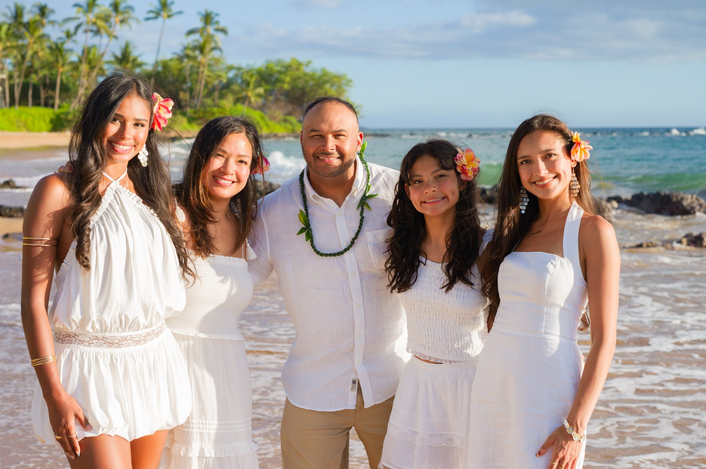
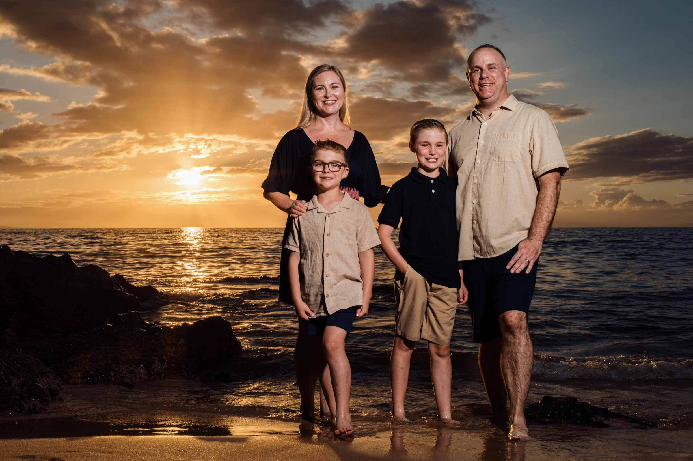
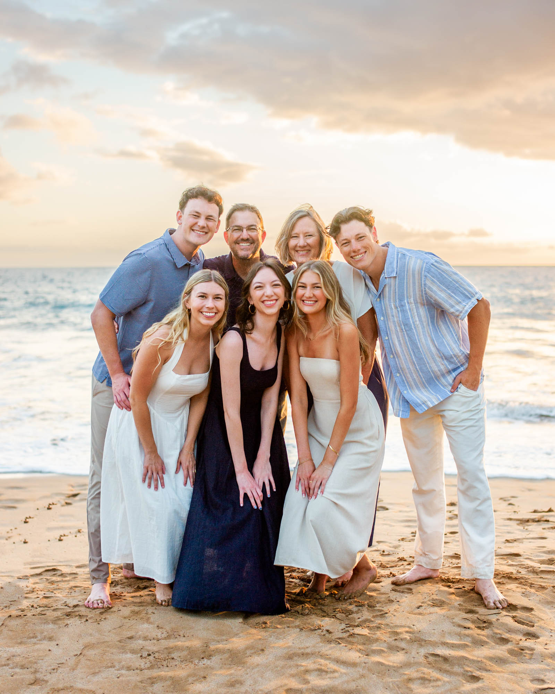
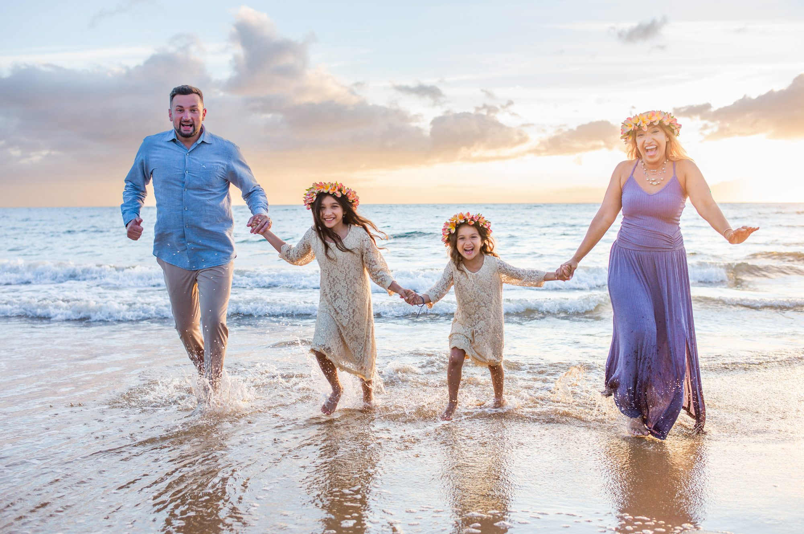

MAUI FAMILY PHOTOGRAPHERTogether is the whole story.
Beautifully guided portraits that still feel unmistakably like your family.
More connection. Less posing.
We give enough direction for everyone to feel confident, then leave room for the laughter, movement and small gestures that make the photographs yours.
With more than 25 years on Maui, we understand the beaches, changing weather and precise light that turn a family session into an effortless part of your vacation.
As a Maui family photographer, we welcome every group size — from a couple with young kids to multi-generational reunions — and work across Wailea, Makena and South Maui to find the best light and location for your family.
Schedule Your Session Now


Five-star reviews from families around the world.
Google · Yelp · Facebook · Tripadvisor · Viator · Airbnb
Everything families want to know before the session.
Where we photograph families
Sunset sessions meet at Maluaka Beach in Makena, a quiet crescent of sand with soft evening light. Morning sessions meet at Wailea Beach beside the Four Seasons, which is calm and beautifully lit early in the day. Sessions at the Four Seasons, Grand Wailea or Andaz can be arranged when you cover the resort's valet parking.
Sunrise, sunset or turquoise water
The First Half of Sunset is our most popular family session: bright, true-to-life color early enough for toddlers' bedtimes. The Last Half of Sunset brings the deep golden tones. Families with children under six often love the late-morning Turquoise + Water Experience or a short Sunrise with Max mini session.
Toddlers, grandparents and big groups
Sessions are priced for up to five people, and larger families are warmly welcomed. For gatherings of ten or more, our Large Family Legacy session gives enough time for the whole group plus every combination: grandparents, cousins, couples and kids.
Your photographs
Every image is edited by hand for natural color and brightness, and delivered within 24 to 72 hours as high-resolution files with full print rights. We do not smooth skin or reshape bodies; you will look like yourselves.
If the weather turns
Maui weather changes quickly. If it does not cooperate, we reschedule at no charge, which is why we suggest booking early in your trip rather than on your last evening.
A family photographing families
Wailea Photo is run by Laurence Balter and his family, with Max, Jude and Solomon behind the camera too. With more than 25 years and thousands of family sessions on Maui, we know which beach, which minute and which kind of direction will work for your crew.
Sessions & live pricing · What to wear · Best beaches for family photos · Family reunions
What families ask us first.
What is a Maui family photographer session like?
Relaxed and unhurried. Sessions typically take place during golden hour near sunrise or sunset, when the light is softest, with gentle guidance so every generation feels comfortable in front of the camera.
How much does a family photography session cost in Maui?
Sessions start at $299; the exact price depends on session, date, time and group size, and appears when you choose your date and time. Live availability is on our Sessions & Pricing page.
Can you photograph multi-generational family reunions?
Yes. Multi-generation sessions are common — just let us know your group size in advance so we can plan enough time for both group and individual combinations.
What should our family wear for Maui photos?
Our What to Wear Guide in The Maui Atlas has color ideas, sunrise and sunset advice, and examples to help your family feel comfortable and look beautifully coordinated.
Do you photograph families staying outside Wailea?
Yes. While based in Wailea, we work throughout Makena and South Maui depending on light and location.
Where do Maui family photo sessions take place?
Sunset sessions are at Maluaka Beach in Makena and morning sessions are at Wailea Beach next to the Four Seasons. Resort sessions are possible if you cover valet parking, and other beaches can sometimes be arranged for a travel fee.
How soon will we receive our family photos?
Edited, high-resolution images are delivered within 24 to 72 hours, with full print rights.
Is sunrise or sunset better for family photos with young kids?
For toddlers, the First Half of Sunset or a morning session usually works best: bright, even light and an easy fit before bedtime. The Last Half of Sunset is ideal when you want deep golden color and older kids can stay up a little later.
Let's make this week last.
Choose the light and length that feel right for your family.
View Family Sessions
Best Beaches in Maui for Family Pictures
Mokapu, Maluaka, Kanahā and Keawakapu compared for light, wind, crowds, access and the families each beach suits best.
Read the guide
Best time of day for a family beach photo in Wailea
Golden hour, sunrise, and why midday sun in Wailea is the one window we don't recommend.
Read the guide
What to wear for Maui photos
Field-tested guidance on colors, fabrics, coordination, wind, footwear, and comfortable clothing that photographs beautifully beside Maui’s sand and ocean.
Read the guide